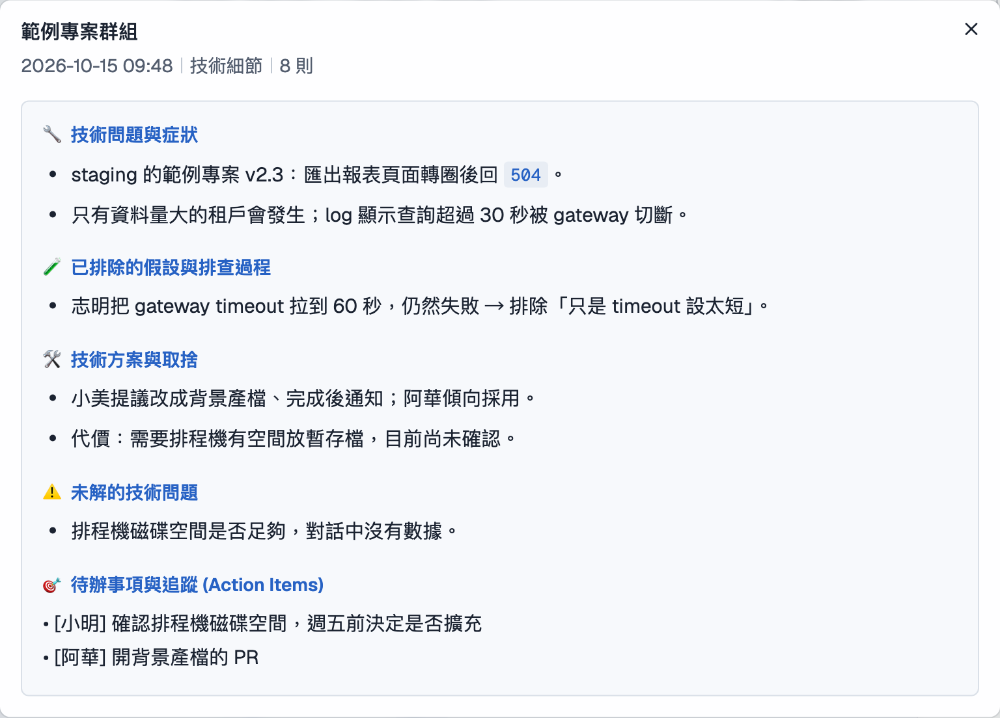

01 · 單群摘要三種風格，章節結構各不相同
選一個 Space、抓最近 N 則（1~1000，預設 50），Summary 以 SSE 逐字串流產出。三種風格（通用／技術細節／只要待辦）輸出的章節結構不同，不是同一份 prompt 多加一句「寫技術一點」。
- 技術細節風格多出「已排除的假設與排查過程」，讓接手的人不必重做白工
- Action Items 從摘要抓出來變成可勾選清單，可複製為 Markdown
- 推播回 Chat 以你本人身分送出，需要二次確認
- Summary 只屬於產生它的人，其他 Viewer 看不到
